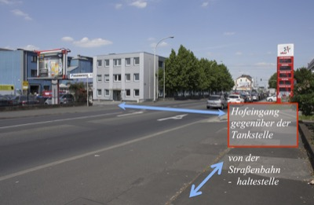
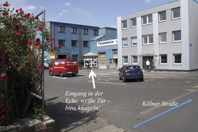

Eingang Bonnstraße

Eingang Kölner Strasse

{kind=link}

Vom Hauptbahnhof mit der U-Bahn 2 Stationen in Richtung NEUMARKT (mehrere Linien), dort nach oben gehen. Die Straßenbahn Linie 7 Richtung FRECHEN nehmen, bis zur Haltestelle FRECHEN BAHNHOF (25min Fahrzeit). Nach Ankunft bitte gegen die Fahrtrichtung schräg zurückgehen auf die Kölner Str. (ca. 100m), noch weiter 100 m auf der Kölner Strasse gehen. Auf der anderen Straßenseite finden Sie dann die Nr. 180, ein weißes Treppenhaus, etwas von der Straße zurück in einem großen weißen Block.
Mit dem Auto von Süden (A1):
Ausfahrt Frechen im Kreuz Köln West, links auf die Dürener Str., unter der
Autobahn durch, nach ca. 250 m („Burger King“) rechts in die Kölner Str., dieser
folgen und nach 500 m an der Ampel rechts in die Bonnstr. und direkt links in
die Hofeinfahrt.
Aus allen anderen Richtungen (A1 oder A4):
Am Kreuz Köln West Richtung Koblenz, Ausfahrt Frechen. Rechts ab auf die Dürener
Str., nach ca. 250 m („Burger King“) rechts in die Kölner Str., dieser folgen
und nach 500 m an der Ampel rechts in die Bonnstr. und direkt links in die
Hofeinfahrt.

{kind=link}